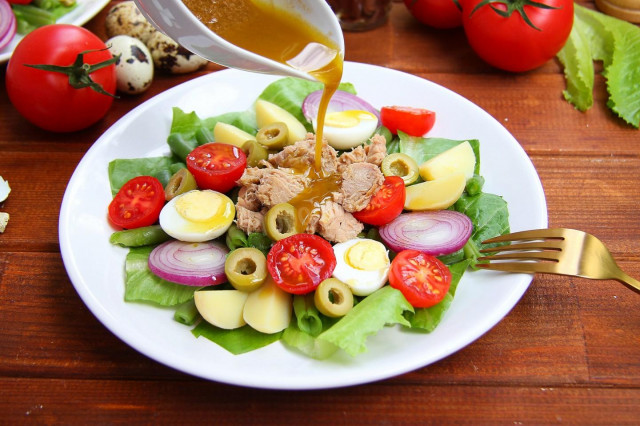
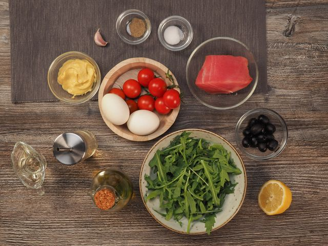

Салат Нисуаз
Изысканный и сытный салат родом из Ниццы!
Нисуаз - это один из самых гармоничных по вкусу и аромату, цвету, яркости и сытности салат.
Поэтому стоит убрать или добавить хоть один ингредиент, и будет уже совсем не то...
Это классическая версия салата, большинсту нравиться больше всего!

Ингридиенты для Заправки
- Оливковое масло (5 стол л.)
- Дижонская горчица (0,5 чайн.л.)
- Бальзамический уксус (1 чайн.л.)
- Анчоусы (0,5 шт.)
Ингридиенты для Салата нисуаса
- Листья салата (200 гр.)
- Тунец консервированный (160 гр.)
- Помидоры черри (6 шт.)
- Перепелинные яйца (3 шт.)
- Фасоль стручковая зеленая (100 гр.)
- Молодая картошка (100 гр.)
- Оливки (8 шт.)
- лук перчатый (0,25 шт.)

- Для Нисуаза я беру совсем молодые клубни, так называемый "бэби-картофель". Он варится очень быстро: 15 минут после закипания воды. Но подойдут и клубни среднего размера. Готовые клубни залейте холодной водой, чтобы кожура лучше отходила. Отставьте на время.
- Фасоль бланшируйте в кипятке примерно 10 минут до готовности.
- Затем откиньте на дуршлаг и обдайте холодной фильтрованной водой. Так процесс термообработки остановится быстрее.
- Перепелиные яйца отварите отдельно вкрутую. После закипания воды яйца будут готовы уже через 5 минут. Сразу залейте их ледяной водой, чтобы лучше чистились.
- Для нисуаза традиционно используется салат "Романо" или "Ромэн". У него плотные сладковатые листья. Отделите каждый лист от кочана и промойте под проточной водой. Встряхните листья и отбросьте на дуршлаг: вода должна полностью стечь.
- Остывшие картофель и яйца очистите и нарежьте. Картофель на четвертинки, яйца пополам.
- Томаты черри и оливки без косточки нарежьте пополам, красный лук - кольцами.
- На тарелки выложите крупно нарезанные салатные листья, сверху - фасоль.
- В центр выложите консервированный тунец в собственном соку. По бокам симметрично яйца и картофель.
- Следом лук, помидоры и оливки. Осталось приготовить соус.
- Для соуса смешайте погружным блендером оливковое масло, бальзамический уксус, дижонскую горчицу и филе анчоуса.
- Половинки филе на две порции мне вполне достаточно. Но вы регулируйте по вкусу. С погружным блендером косточек от анчоуса в соусе не будет чувствоваться совсем.